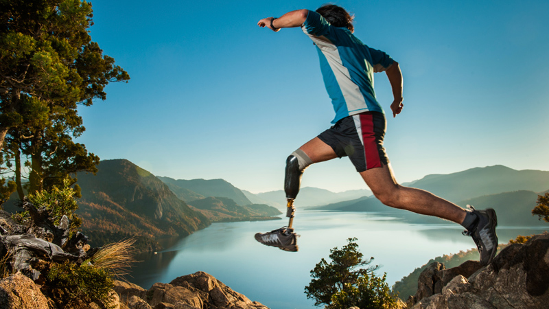
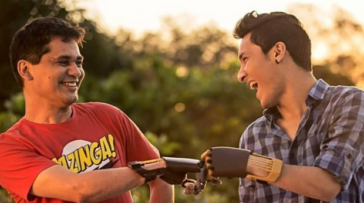
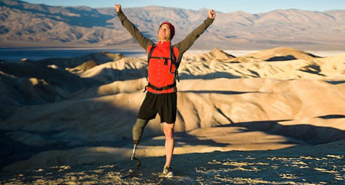
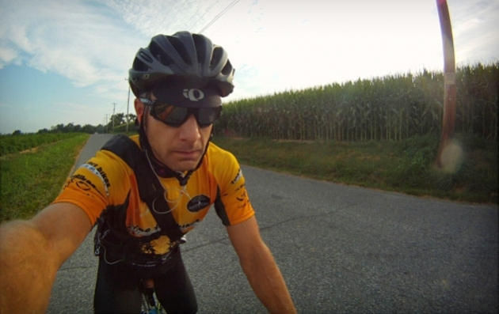
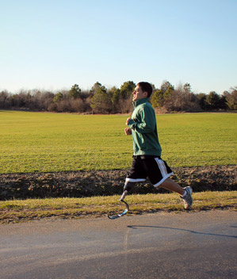
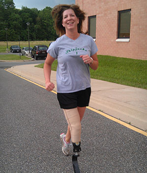
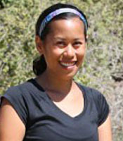

PREVIOUS
NEXT
Featured Stories
|

|
TrentonI had always viewed an amputation as an end to my active lifestyle. I loved all kind of sports as a kid and was especially good at running. In the 2nd grade, every morning my twin brother and I used to get up early before school and run a mile to train for track and field. As a kid, I also dreamed about being on the high school's basketball team. However, my young sports career came to a fast halt after being diagnosed with bone cancer at the young age of 12 years old. After battling the bone cancer, I had to go through radiation as well as 12 surgeries in attempt to get rid of the cancer in my body and save my lower right leg. An infection finally forced the doctors to amputate below my knee. Three years after I was diagnosed with bone cancer, at the age of 15, I began going to Real Life Prosthetics™ .

|
|

AlisaAt 32 years of age I became a below the knee amputee. My story is not like most. I don’t have a disease that results in limb loss, nor was I in an accident. My amputation is a result of a high school basketball injury. I broke my right ankle when I was a freshman. The break was hidden behind another bone in my leg, and without today’s technology it went unnoticed. I was told that I did a great deal of tendon damage, which would take a long time to heal. My ankle was put in a cast. I was young, competitive and looking for an athletic scholarship. I didn’t listen to my body and played even though I was in pain. If I only knew then, what I know now. Within a year of the injury I had my ankle reconstructed. I did exactly what the doctors told me, but the reconstruction failed, and I was faced with another surgery in less than a year. In fact, I went through the trauma of 17 surgeries over 17 years. |
RussOn the morning of November 17, 1995 while traveling to work I was hit head on by another vehicle. When I awoke some 21 days later I learned I had lost my left leg above the knee due to complications during and after surgery from a ruptured aorta. Ironically that was the leg that suffered not even a scratch while my right leg was severely injured. I spent approximately two months at the University of Maryland Shock Trauma Center and another two months at Kernan Rehabilitation Center. In April of 1996 I received my first prosthesis and to my amazement knew how to use it immediately (with crutches of course). Since 1996, I have had plenty of prosthetic legs and lots of success. My most recent prosthesis has a microprocessor knee and a multi-axial dynamic response carbon composite foot. This leg is incredible in the way of speed and gait control. The microprocessor unit regulates its speed to match my gait and allows me to walk smoothly without having to think about it. My wife, family, and friends all agree my gait has improved by at least 90% (no joke). |
|

Cheryl HileCheryl Hile is living with multiple sclerosis (MS), but the condition hasn't stopped her from completing 34 marathons since being diagnosed. Now, to raise MS awareness and funding, all while inspiring others, Cheryl is taking on a challenge of a lifetime. With the assistance of a custom ankle foot orthosis Cheryl is embarking on a quest to become the first person with MS to complete seven marathons on seven continents within one year. See her incredible story and follow her progress.Cheryl started having what felt like painful electric shocks in her right bicep. Due to her heavy running and training regimen, her doctor diagnosed the problem as most likely a pinched nerve and sent her home to let it heal. It was only when the shocks became more painful and her arm began going numb that an MRI was ordered. The results showed lesions in her brain and spinal column. Cheryl’s doctor delivered the devastating news that she had Multiple Sclerosis (MS). |
Want to share your story ?Write us below and we can upload it. |